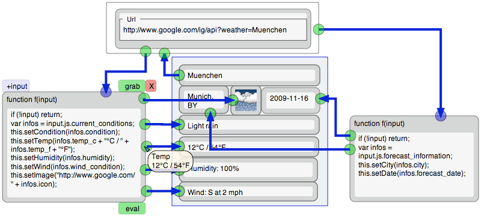

Lively Fabrik is a Web-based general-purpose end-user programming environment. Based on the Lively Kernel, Lively Fabrik extends the ideas of the original Fabrik system by empowering end-users to create interactive Web content entirely within their Web browsers. Web applications created with Lively Fabrik typically combine Web sources, data manipulation, and interactive user interface elements. The result can be a Mashup, but due to the powerful underlaying system, any general-purpose application. Connecting components with wires and scripting components is all that is needed to do so.
http://lively-kernel.org/repository/webwerkstatt/weather.xhtml
© 2006-2010 HPI Software Architecture Group